A universal grid map library: Implementation and use case for rough terrain navigation
한줄 요약 — ROS 이동로봇이 고도, 불확실성, 색상, 표면 법선, 주행성을 동일한 2.5D 격자에서 다루도록 다층 float 행렬, 무복사 원형 버퍼 이동, 영역 iterator, filter chain과 메시지 변환을 제공하고, StarlETH의 확률 고도지도와 RRT 주행계획으로 실시간 활용성을 보인 재사용 지도 기반이다.
1.연구 배경 및 동기
거친 지형 알고리즘 사이의 공통 지도 기반
평탄한 바닥을 전제로 한 2D occupancy map은 셀을 occupied, free, unknown처럼 제한된 상태로 표현해 이동로봇의 기본 주행에는 충분하다. 그러나 다족·궤도 로봇이 거친 지형을 다루려면 고도뿐 아니라 분산, 색상, 법선, 거칠기, 주행성처럼 물리량이 다른 정보를 같은 위치에서 함께 처리해야 한다. 논문은 개별 연구마다 격자 저장·이동·부분 접근·ROS 변환을 반복 구현하는 문제를 범용 라이브러리로 해결한다.
핵심 선택은 완전한 3D voxel이나 octree가 아니라 2.5D grid map이다. OctoMap은 여러 층과 overhang을 표현할 수 있지만 노드 탐색 비용이 들고, 거친 지면의 직접 인덱스 접근과 후처리는 평면 격자가 단순하다. 저자들은 빠른 셀 접근이 필요한 국소 표면 재구성·주행성 평가에 초점을 맞추되, 입력 데이터나 처리 순서를 특정 센서와 알고리즘에 묶지 않았다.
라이브러리는 ROS 생태계와 호환되면서 core에는 ROS 의존성을 제거한다. 모든 layer를 Eigen의 float matrix로 저장해 선형대수 연산을 바로 적용하고, OccupancyGrid·GridCells·PointCloud2·GridMap 메시지 변환과 RViz 시각화를 제공한다. 이 장은 API 설명뿐 아니라 robot-centric elevation mapping과 rough-terrain path planning이 실제로 이 기반을 어떻게 소비하는지 연결한다.
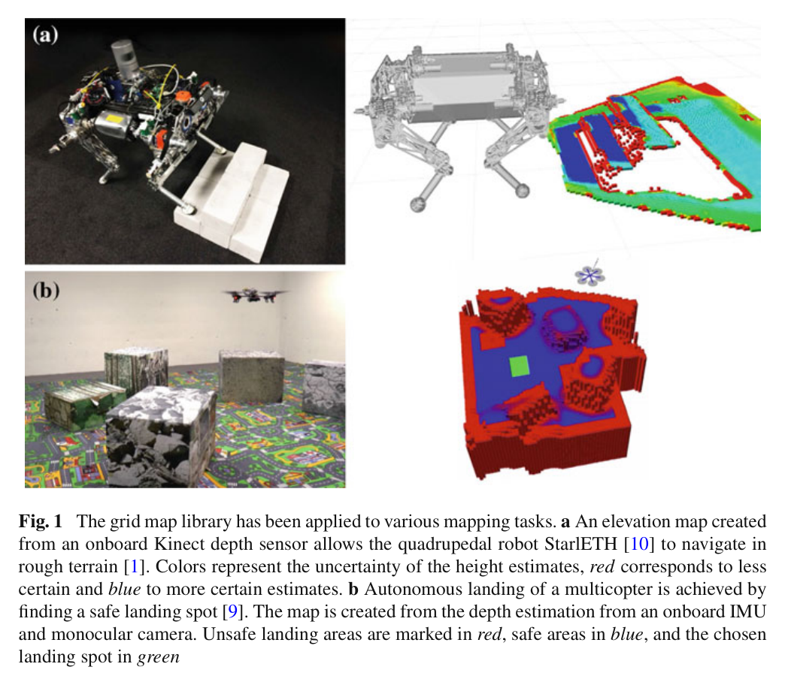
원문 Figure 1 · PDF p.3 — Fig. 1 The grid map library has been applied to various mapping tasks. a An elevation map created from an onboard Kinect depth sensor allows the quadrupedal robot StarlETH [10] to navigate in rough terrain [1]. Colors represent the uncertainty of the height estimates, red corresponds to less certain and blue to more certain estimates. b Autonomous landing of a multicopter is achieved by finding a safe landing spot [9]. The map is created from the depth estimation from an onboard IMU and monocular camera. Unsafe landing areas are marked in red, safe areas in blue, and the chosen landing spot in green
선행 연구의 한계
ROS costmap_2d의 unsigned char 0~255 표현은 고도·분산·법선 같은 연속 물리량을 정밀하고 일관되게 저장하기 어렵다.
OctoMap의 octree는 완전한 3D 구조에 유리하지만 셀 접근 때 노드 탐색이 필요해 2.5D 지면 후처리의 직접 접근보다 비용이 크다.
로봇 중심 지도는 이동할 때마다 격자 데이터를 복사하면 메모리 할당과 복사 비용이 커져 고주파 갱신을 방해한다.
지도별 사용자 코드가 영역 경계 검사와 ROS 메시지 변환을 반복 구현하면 재사용성이 떨어진다.
이 연구의 기여
복수 float layer를 같은 기하에 정렬해 저장하는 GridMap 자료구조와 ROS 비의존 core를 공개했다.
2차원 circular buffer로 겹치는 셀을 메모리에서 옮기지 않고 지도 중심을 이동하는 move 연산을 제공했다.
iterator, Eigen 직접 연산, filter chain, 이미지·ROS 메시지 변환을 통합하고 StarlETH에서 1 cm·20 Hz 지도 갱신과 RRT footprint 검사를 시연했다.
2.방법론 및 시스템 구성
GridMap 객체는 frame id, 중심 위치, x-y 길이, 해상도와 layer 목록을 가진다. 각 layer는 같은 크기의 Eigen float matrix이므로 elevation, variance, normal_x/y/z, color, traversability를 셀별로 정렬할 수 있다. 사용자는 기본 layer를 지정해 셀 유효성을 검사하고, NaN으로 미관측 값을 표현한다.
로봇 이동은 move(position)으로 처리한다. 새 지도와 이전 지도의 겹치는 부분은 원형 버퍼에 그대로 남고, 범위를 벗어난 셀은 버리며 새 영역만 NaN으로 초기화한다. 후처리는 iterator와 filter chain으로 제한된 영역에서 수행하고, 결과는 GridMap 메시지 또는 기존 ROS 타입으로 바꿔 계획·시각화 모듈에 전달한다.
처리 파이프라인
1
다층 지도 초기화
GridMap에 필요한 layer 이름을 등록하고 frame id, 중심, 길이, 해상도를 설정한다. 예제는 elevation 한 층으로 1.2×2.0 m, 0.03 m/cell 지도를 만들며 실제 y 길이는 해상도의 정수배인 2.01 m로 정렬된다.
2
직접 셀·행렬 처리
index 또는 world position으로 셀에 접근하고, layer 전체는 Eigen matrix로 꺼내 덧셈·절댓값·제곱합 같은 연산을 수행한다. NaN 구멍, noisy elevation, filtered elevation, error를 별도 layer로 유지할 수 있다.
3
무복사 지도 이동
move 연산이 2차원 circular buffer의 시작 인덱스를 바꿔 지도 중심을 로봇에 맞춘다. 겹치는 셀은 복사·재할당하지 않고 보존하며 새로 노출된 경계만 지운다.
4
영역 iterator와 filter chain
GridMapIterator, SubmapIterator, CircleIterator, PolygonIterator, LineIterator가 경계 안전한 셀 순회를 제공한다. grid_map_filters는 runtime parameter로 평균화·법선·주행성 같은 처리를 연결한다.
5
ROS 교환과 시각화
GridMapRosConverter로 GridMap 메시지, PointCloud2, OccupancyGrid, GridCells를 변환하고 bag 저장·로드와 image layer 입력을 지원한다. RViz visualizer는 layer를 점 높이·색·벡터로 매핑한다.
6
거친 지형 사용 사례
PointCloud2 거리 측정과 PoseWithCovarianceStamped를 받아 measurement update, robot-motion map update, 요청 시 map fusion을 수행한다. fused map의 slope, step height, roughness를 filter chain으로 계산하고 RRT가 robot footprint의 모든 셀을 검사한다.
튜토리얼에서 원 elevation layer의 셀 값 c_i와 필터 결과 f_i 사이의 복원 오차를 Eigen 연산으로 계산하는 식이다.
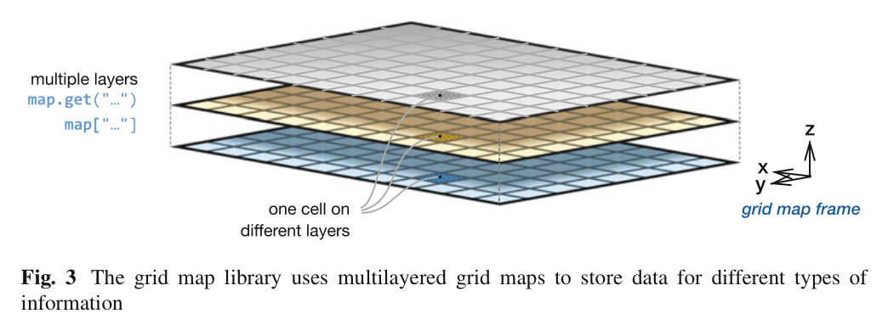
원문 Figure 3 · PDF p.10 — Fig. 3 The grid map library uses multilayered grid maps to store data for different types of information
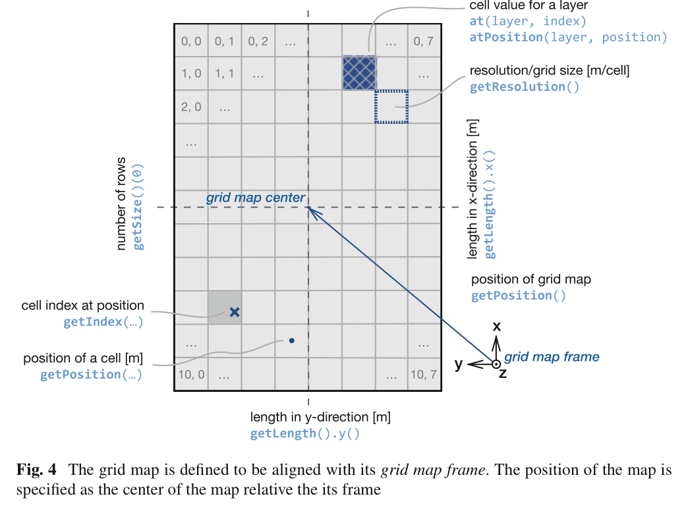
원문 Figure 4 · PDF p.11 — Fig. 4 The grid map is defined to be aligned with its grid map frame. The position of the map is specified as the center of the map relative the its frame
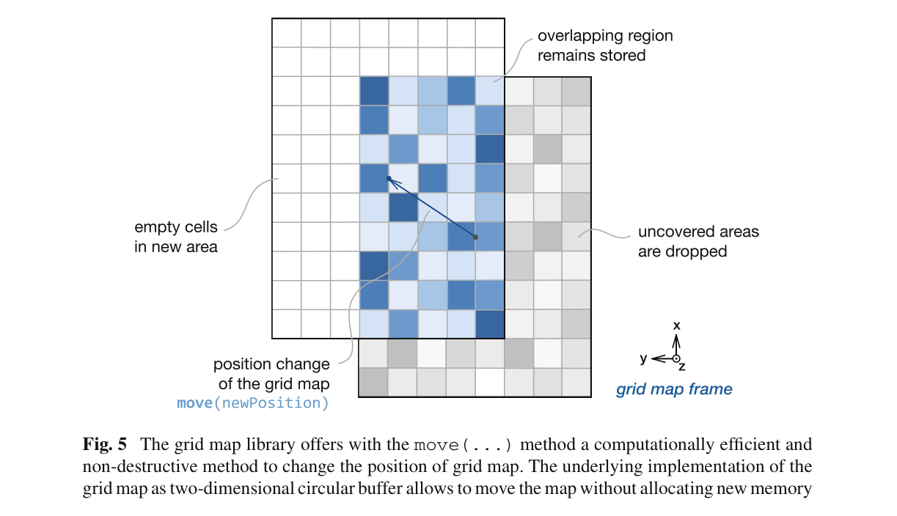
원문 Figure 5 · PDF p.12 — Fig. 5 The grid map library offers with the move(...) method a computationally efficient and non-destructive method to change the position of grid map. The underlying implementation of the grid map as two-dimensional circular buffer allows to move the map without allocating new memory
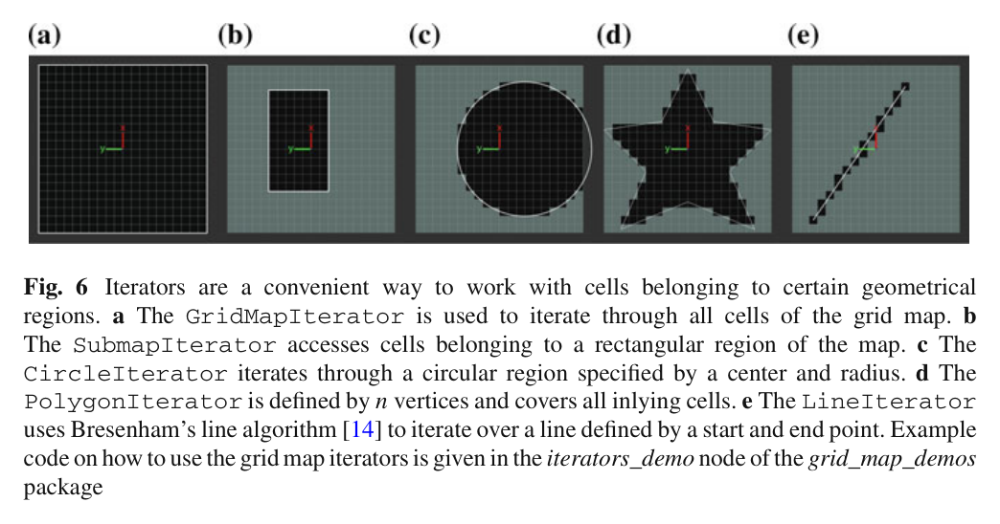
원문 Figure 6 · PDF p.13 — Fig. 6 Iterators are a convenient way to work with cells belonging to certain geometrical regions. a The GridMapIterator is used to iterate through all cells of the grid map. b The SubmapIterator accesses cells belonging to a rectangular region of the map. c The CircleIterator iterates through a circular region specified by a center and radius. d The PolygonIterator is defined by n vertices and covers all inlying cells. e The LineIterator uses Bresenham’s line algorithm [14] to iterate over a line defined by a start and end point. Example code on how to use the grid map iterators is given in the iterators_demo node of the grid_map_demos package
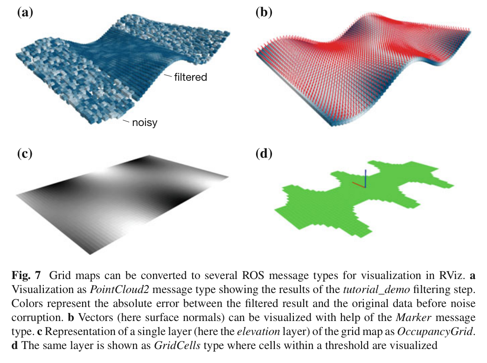
원문 Figure 7 · PDF p.16 — Fig. 7 Grid maps can be converted to several ROS message types for visualization in RViz. a Visualization as PointCloud2 message type showing the results of the tutorial_demo filtering step. Colors represent the absolute error between the filtered result and the original data before noise corruption. b Vectors (here surface normals) can be visualized with help of the Marker message type. c Representation of a single layer (here the elevation layer) of the grid map as OccupancyGrid. d The same layer is shown as GridCells type where cells within a threshold are visualized
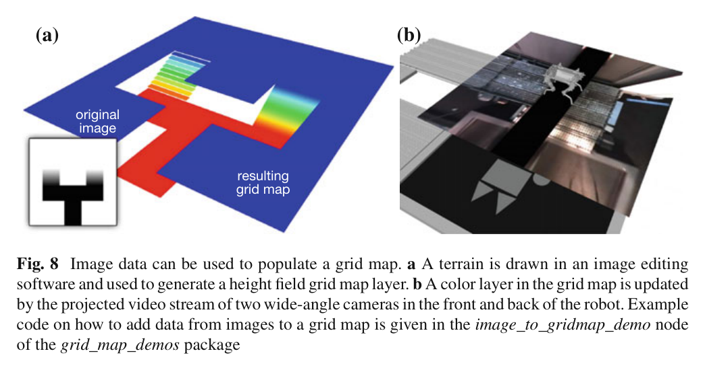
원문 Figure 8 · PDF p.16 — Fig. 8 Image data can be used to populate a grid map. a A terrain is drawn in an image editing software and used to generate a height field grid map layer. b A color layer in the grid map is updated by the projected video stream of two wide-angle cameras in the front and back of the robot. Example code on how to add data from images to a grid map is given in the image_to_gridmap_demo node of the grid_map_demos package
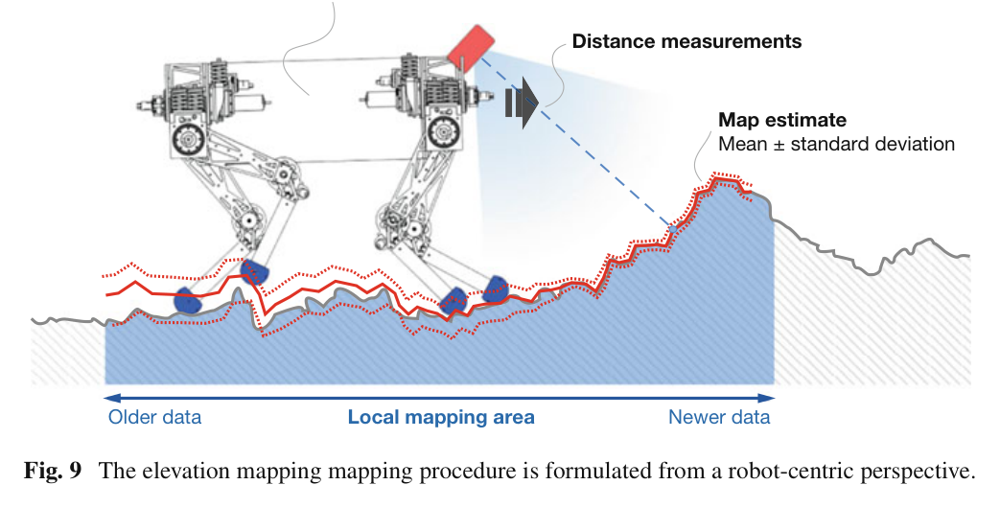
원문 Figure 9 · PDF p.18 — Fig. 9 The elevation mapping mapping procedure is formulated from a robot-centric perspective.
3.핵심 기술
float 다층 격자와 Eigen 직접 연산
costmap_2d처럼 상태를 byte 하나로 압축하지 않고 각 layer를 float matrix로 저장한다. 덕분에 높이와 분산, RGB-packed color, 표면 법선 성분, 재질이나 주행성 점수를 동일 셀 기하에 맞춰 보존한다. layer 간 산술과 RMSE 계산을 Eigen 표현식으로 실행하므로 별도 복사 루프가 줄어든다.
grid_map_core는 ROS 비의존
동일 셀에 여러 물리량을 congruent layer로 저장
basic layer의 finite 여부로 셀 유효성 판단
2차원 원형 버퍼 기반 로봇 중심 이동
고정 크기 국소 지도가 로봇을 따라갈 때 겹치는 데이터를 실제 메모리에서 이동시키지 않는다. circular buffer가 논리 좌표와 저장 인덱스의 대응을 바꾸고, 밖으로 나간 부분과 새로 들어온 부분만 갱신한다. 이는 pose drift를 다루는 robot-centric elevation mapping이 20 Hz 측정을 계속 받는 동안 지도 이동 자체의 부하를 작게 유지하는 기반이다.
겹치는 영역 보존
새 영역은 NaN 초기화
getIndex/getPosition이 내부 wrap-around를 숨김
표준화된 공간 순회·필터·메시지 경계
로봇 footprint, 원형 센서 범위, 선분 ray, 직사각형 submap처럼 반복되는 공간 연산을 iterator로 추상화한다. planner는 PolygonIterator로 footprint 아래 셀을 안전하게 검사하고, filter chain은 slope·step·roughness 계산을 런타임 구성으로 교체한다. 결과는 ROS 표준 메시지로 변환되어 기존 navigation stack과 RViz를 그대로 이용한다.
StarlETH 앞쪽에 downward-facing PrimeSense Carmine 1.09 structured-light sensor를 장착하고, kinematic·inertial state estimator의 pose covariance를 함께 입력했다.
첫 elevation mapping 설정은 2.5×2.5 m, 1 cm/cell, 20 Hz이며 Intel Core i3 2.60 GHz 온보드 컴퓨터에서 실행했다.
별도 traversability 설정은 회전 Hokuyo laser로 6×6 m, 3 cm/cell 고도지도를 만들고 slope·step height·roughness 필터와 RRT planner를 사용했다.
실험 프로토콜
raw elevation map은 measurement·map update 뒤 지속 발행하고, fused map은 trigger_fusion 서비스 요청 때 주변 셀을 결합해 생성했다.
실제 StarlETH가 장애물 위를 걸을 때 고해상도 지도에서 outlier와 hole 억제, 계획에 충분한 갱신 속도를 정성 확인했다.
복도 지도에서는 RRT 확장마다 PolygonIterator로 로봇 footprint의 모든 셀 주행성을 검사해 충돌 없는 goal pose 경로를 찾았다.
비교 기준
ROS costmap_2d 자료형·인터페이스와의 기능 비교
OctoMap의 완전 3D octree 표현과의 구조 비교
수치 정확도 baseline은 원문에서 보고되지 않음
평가 지표
지도 크기와 셀 해상도
range·pose update 주파수
온보드 실시간 처리 가능 여부
지도 구멍·outlier 억제의 정성 품질
ROS 메시지·필터·iterator 재사용성
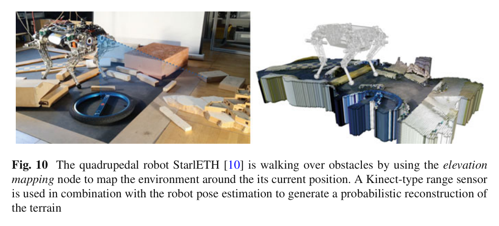
원문 Figure 10 · PDF p.19 — Fig. 10 The quadrupedal robot StarlETH [10] is walking over obstacles by using the elevation mapping node to map the environment around the its current position. A Kinect-type range sensor is used in combination with the robot pose estimation to generate a probabilistic reconstruction of the terrain
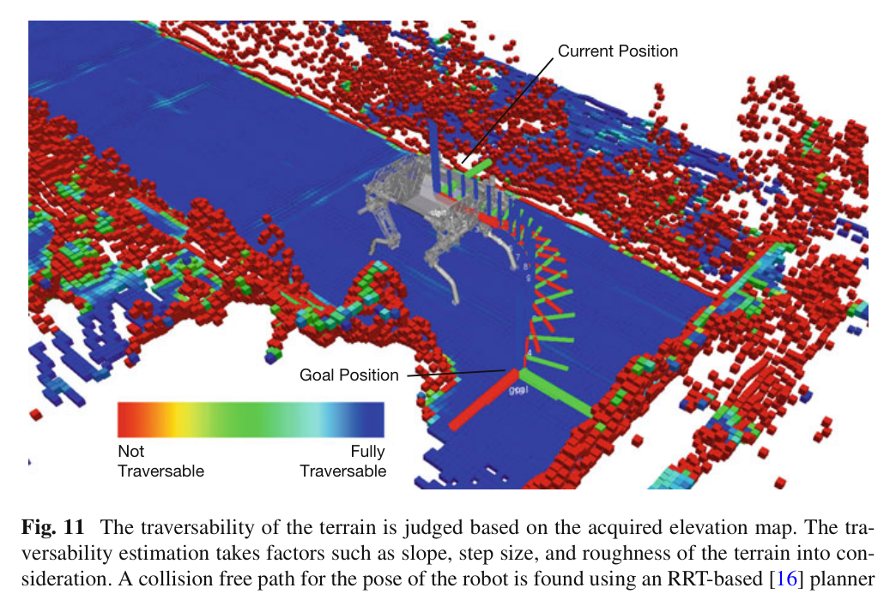
원문 Figure 11 · PDF p.20 — Fig. 11 The traversability of the terrain is judged based on the acquired elevation map. The tra- versability estimation takes factors such as slope, step size, and roughness of the terrain into con- sideration. A collision free path for the pose of the robot is found using an RRT-based [16] planner
핵심 결과 해석
StarlETH 설정에서 2.5×2.5 m 지도를 1 cm 셀로 구성하고 range와 pose를 20 Hz로 갱신했다. Intel Core i3 2.60 GHz에서 계획에 사용할 수 있는 속도로 처리됐으며, 고해상도 센서와 확률 융합 덕분에 미관측 hole이 매우 적고 spurious data가 억제됐다. 논문은 절대 고도 RMSE나 처리시간 분포를 제시하지 않으므로 결과는 실시간 구성값과 정성 품질로 해석해야 한다.
6×6 m, 3 cm/cell의 Hokuyo 기반 설정에서는 elevation을 slope, step height, roughness로 해석하고 RRT가 x-y-yaw pose 경로를 찾았다. 각 tree expansion에서 PolygonIterator로 footprint 전체를 검사해 corridor의 통과 가능한 경로를 구성했다. 이 사례는 라이브러리가 단순 저장소가 아니라 mapping-filtering-planning 사이의 공통 데이터 계약으로 기능함을 보여준다.
float Eigen layer, 2D circular buffer, 공간 iterator, filter chain, ROS 변환을 묶어 로봇 중심 2.5D 지도의 공통 구현을 제공한다.
핵심 결과는?
StarlETH에서 2.5 m 지도·1 cm 셀·20 Hz 고도 갱신과 6 m 지도·3 cm 셀 기반 RRT footprint 계획을 온보드로 연결했다.
한계는?
비교 benchmark와 절대 지도 오차가 없고 단일 표면 2.5D이므로, 완전 3D·동적 지형·대규모 layer의 문제는 응용 측에서 보완해야 한다.
#측위·매핑#환경인식#다층 GridMap#원형 버퍼#filter chain
나의 의견 / 우리 연구와의 연관성
자율굴착 시스템에는 고도 하나가 아니라 원지형, 목표지형, 굴착 후 지형, 토질, 수분, 장비 접근성, 버킷 도달성, 작업 완료도와 불확실성을 같은 x-y 위치에서 공유해야 한다. GridMap의 다층 float 구조와 filter chain은 이런 모듈 간 계약을 새로 만들지 않고 구성할 수 있는 직접적인 기반이다.
그러나 굴착은 지형 자체를 빠르게 바꾸고 버킷·토사에 의해 복수 표면과 가림이 생긴다. 따라서 원형 버퍼의 효율성은 유지하되, layer timestamp·작업 이벤트·관측 출처를 추가하고 2.5D로 설명되지 않는 절벽·버킷 아래 공간은 local voxel map과 결합하는 설계가 필요하다.
elevation·variance·soil class·bucket reachability·completed cut를 동일 GridMap geometry의 layer로 관리할 수 있다.
PolygonIterator를 track footprint뿐 아니라 upper-structure와 counterweight의 회전 sweep 충돌 검사에 활용할 수 있다.
move 연산은 굴착기 중심의 고해상도 작업 지도를 고정 메모리로 유지하면서 겹치는 셀을 재사용한다.
7.전체 그림·표
본문 핵심 위치에 배치하지 않은 원문 Figure와 Table을 원문 페이지 순서로 수록한다.
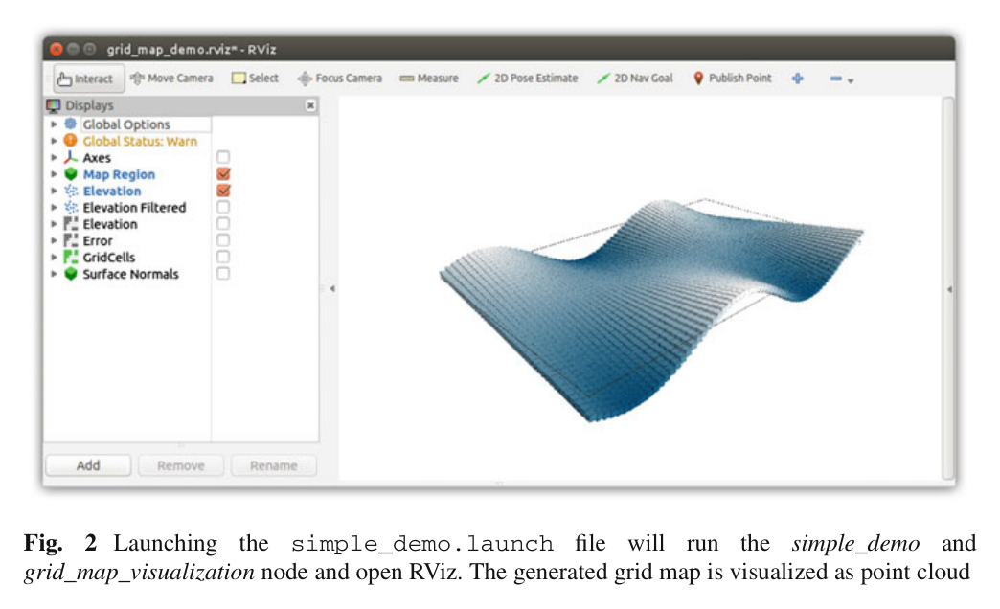
원문 Figure 2 · PDF p.9 — Fig. 2 Launching the simple_demo.launch file will run the simple_demo and grid_map_visualization node and open RViz. The generated grid map is visualized as point cloud